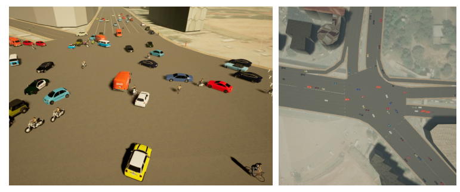
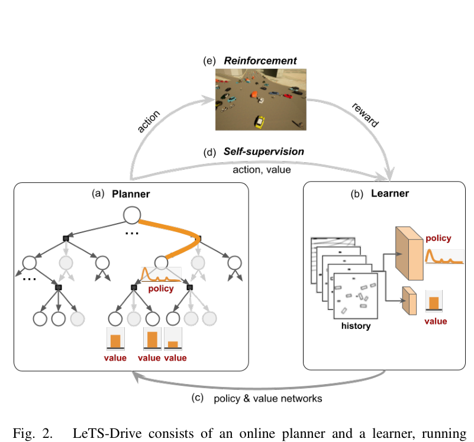
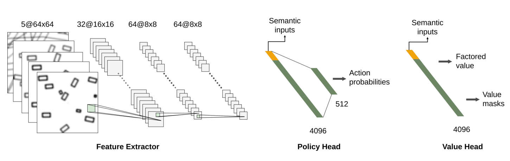
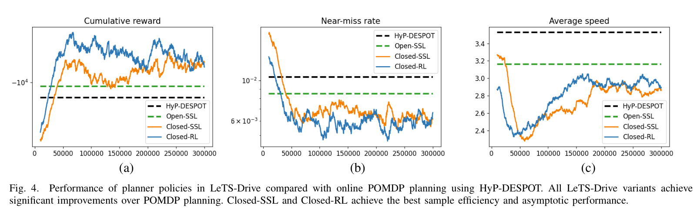
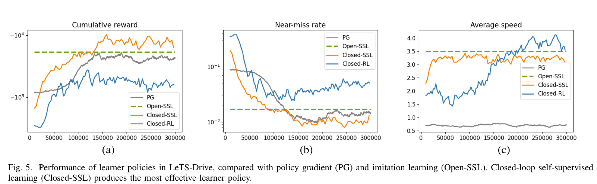
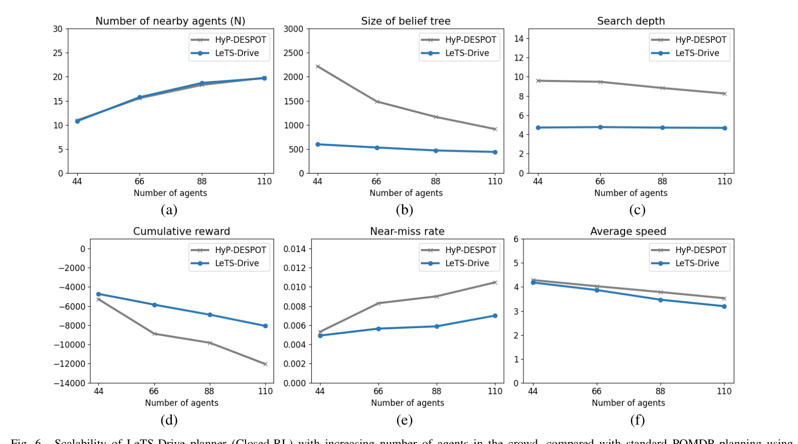
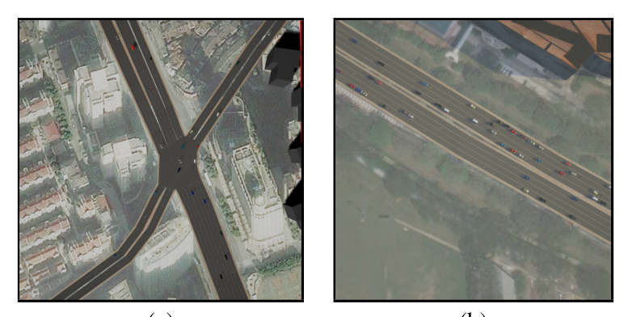
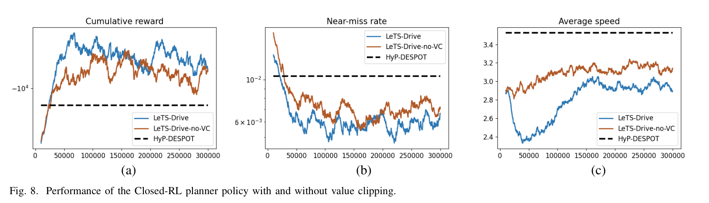

一句话总结： 在密集、无规则、异构交通的"人群驾驶"（crowd-driving）场景中，长时程 POMDP 规划因指数级搜索树而无法实时。LeTS-Drive 提出"局部规划、全局学习" ：在线规划器做短时程信念树搜索，学习到的策略/价值网络作为启发式引导搜索、近似长时程回报；学习器再从规划器的经验中持续更新网络并反馈给规划器——闭环迭代 。实验表明闭环集成远超"规划或学习单打独斗"，也远超开环集成；方法自带近最优性理论保证 。
① 摘要解读
② 背景与动机
③ 方法
④ 实验设置
⑤ 结果与分析
⑥ Insights
⑦ 局限与结论
⑧ 链接
01 摘要解读摘要以自动驾驶机器人在密集、无规则城市交通中穿行为例：自车必须在短期与长期两个尺度上规划，与大量意图不明的交通参与者交互。显式长时程规划的计算代价不可行，无法满足实时约束。论文提出 LeTS-Drive（Learning from Tree Search for Driving） ，将规划与学习整合进一个闭环：
学习器 从在线规划器（稀疏采样信念树搜索）提供的数据中学习策略网络与价值网络；在线规划器 反过来用这两个网络作为启发式，扩大实时规划的规模；两步循环往复，规划器与学习器同步互相提升 ；
算法以自监督 方式自学，无需人工显式标注数据。
实验结论：LeTS-Drive 优于"纯规划""纯学习"以及"规划+学习的开环集成"。
O(|A|D K)
学习启发式后的规划复杂度（D≪H，指数级加速）
~1/10 数据
闭环自监督达到开环集成同等性能所需数据量
0.3 s
每步最大规划时间（3 Hz 执行，模拟人类反应时间）
110 agents
训练场景中的活跃交通参与者数（Meskel Square）
02 研究背景与动机（Introduction）挑战场景：人群驾驶（Crowd-Driving）
自动驾驶车辆要穿过拥挤道路与无信号交叉口，面对汽车、摩托车、公交车、行人等异构车流（图 1）。参与者激烈竞争通行权、避免碰撞，形成复杂交互甚至混乱交通。要在其中有效驾驶，自车必须做长时程规划以对冲未来风险、平衡短期与长期代价。核心挑战是高维状态空间中规划的可扩展性 ：世界状态是自车与周边所有交通参与者状态的笛卡尔积；环境动力学复杂、控制与感知不完美，不确定性进一步加剧困难。

图 1：人群驾驶——在复杂城市环境中穿过密集、无规则、异构交通（汽车、摩托车、公交车、行人…）。
为什么长时程搜索不可行？
主流实时规划是模型上的在线前瞻搜索，其代价直接取决于搜索时程 H：搜索树随 H 指数增长 ，迅速突破实时计算极限；且模型误差会随深度累积，导致次优决策。作者由此提出关键问题："能否不做深度搜索也获得长时程规划的收益？"
两个核心思想
局部规划、全局学习（plan locally, learn globally） ：规划器只做短时程在线前瞻搜索，用从数据学到的策略/价值网络作为全局近似来引导搜索；闭合规划-学习回路（close the planning-learning loop） ：学习器从规划器收集经验、持续改进网络，再把改进的启发式反馈给规划器——两者同步提升。
与 AlphaGo Zero 的异同
思想内核与 AlphaGo Zero 的"学习引导博弈树搜索"一脉相承，但围棋是完全信息、双人、离散 游戏；真实机器人任务（如密集交通驾驶）带来部分可观测、复杂动力学、多异构智能体交互 的新挑战——不确定性是可扩展性的主要障碍。
相对早期工作（RSS 2019 LeTS-Drive）的扩展
闭合回路 ：早期两阶段（离线学启发式 → 在线引导搜索）的规划器与学习器不能随经验共同进步；本文让两者互相成就；理论保证 ：尽管使用近似学习的启发式，仍给出决策近最优性的理论保证；更难的任务 ：应用于更挑战性的驾驶仿真设置——密集异构交通与复杂道路结构。
03 方法详解3.1 总体架构：规划器 × 学习器闭环

图 2：LeTS-Drive 由并发运行的在线规划器 (a) 与学习器 (b) 构成。(c) 学习器向规划器提供策略/价值网络加速规划；(d) 规划器向自监督学习器提供动作与价值数据；(e) 规划器提供动作、仿真器提供奖励给强化学习器。
规划器（actor） ：每步在当前信念处做信念树搜索，用学习到的策略/价值网络作为启发式；选估计价值最高的动作执行；同时记录数据元组（当前信念、监督标签——规划动作与估计价值、执行后环境奖励）存入共享缓冲区。学习器 ：从共享缓冲区采样数据，优化策略/价值网络；改进的启发式经共享缓冲反馈给规划器。循环从随机初始化的网络开始，两条策略（规划器隐式策略 + 学习器显式网络策略）同步改进；搜索树深度为 0 时两者合一。
3.2 人群驾驶的 POMDP 建模
任务：控制自车在密集无规则交通中（如尽快通过无信号交叉口），安全、符合车道网络。POMDP 元组 (S, A, Z, T, O, R)，不确定性主要建模exo-agent（规划时程内可能干扰自车的交通参与者）的意图与注意力 ：
状态 ：自车物理状态 sc =(x, y, v⃗, φ)；各 exo-agent 物理状态（可带噪感知）；各 exo-agent 隐藏状态 θi =(ti , μi )——注意力（专注/分心）与意图路线，无法被传感器直接观测、只能从历史推断。信念 b 是所有物理状态与隐藏变量上的后验，每步用贝叶斯滤波更新。动作 ：车道决策 {Left, Keep, Right} × 纵向加速度 {Acc(3 m/s²), Maintain, Dec(−3 m/s²)}，共 9 个离散动作；车道决策用纯追踪算法执行；自车最大速度 6 m/s。观测 ：所有交通参与者离散化后的物理状态（无隐藏状态）。转移 ：分心 agent 盲目沿意图路径按观测速度行驶；专注 agent 遵循最优局部避碰模型（GAMMA）交互；车辆用自行车模型、行人用全向模型近似；所有位移加高斯噪声模拟人类行为随机性。奖励 ：碰撞 −1000×(v²+0.5)（随碰撞速度二次增长）；速度惩罚 Rv =4(v−vmax )/vmax ；每次减速 −0.1；每次变道 −4。
为学习而设计：分解的价值函数
上述奖励在碰撞事件附近剧烈变化，导致价值函数高度不光滑、难以学习。论文利用奖励可加性与备份算子的线性性，把价值分解为
安全驾驶因子 （效率奖励+平顺惩罚）与
碰撞因子 （碰撞风险与惩罚）两个光滑因子，在信念树搜索中分别做分解备份、独立学习，再线性组合恢复原价值函数。
3.3 学习引导的规划：扩展 HyP-DESPOT
基础是 HyP-DESPOT ——最先进的在线 POMDP 规划算法：采样 K 个场景（scenario）代表随机未来，构造 O(|A|H K) 的稀疏信念树；anytime 启发式搜索以上下界 u(b)/l(b) 驱动 trial：沿"最高乐观值"动作分支下行、沿"剩余不确定性最大"观测分支下行，叶节点用 MC rollout 初始化下界、显式启发式初始化上界，Bellman 备份回传，直至根节点上下界间隙足够小。LeTS-Drive 的两处关键扩展：
a* = argmaxa∈A [ u(b,a) + c·πθ (a|xb )·√( N(b) / (N(b,a)+1) ) ] （策略引导的动作选择，UCB 风格）
策略网络引导前向遍历 ：每个节点查询策略网络得动作先验概率，以 UCB 风格的探索奖励项加权——搜索早期上界估计无信息时强烈偏向学习到的策略，搜索充分后上界差逐渐主导；价值网络近似长时程回报 ：叶节点用价值网络预测先验价值，并做价值裁剪 ：v̂₀(b)=min(max(l₀(b), vθ′ (xb )), u₀(b))，把学习值夹在初始 MC 上下界之间，保证 l(b)≤v̂(b)≤u(b) 在整棵树中成立——这是理论保证的基石。
复杂度收益 ：策略网络降低有效分支因子，价值网络把搜索截断到浅时程 D（之外直接用学习值近似），规划代价从 O(|A|H K) 降到 O(|A|D K) ，D≪H 时指数级加速。
定理 1（近最优性保证）
使用学习启发式的信念树搜索是
概率渐近最优 的：规划时间无界时，根节点不确定性间隙 ε(b₀) 有限时间收敛到零；以概率至少 1−τ，报告策略的价值满足 V
π̂* (b₀) ≥ V
π* (b₀) − ε̂
π*,τ (K)，其中遗憾界与 DESPOT 的 Theorem 3.2 相同，K→∞ 时以 O(1/√K) 速率趋于零。证明要点：周期性启动的"乐观 trial"（无偏启发式）保证间隙单调收敛，与其它 trial 用什么探索机制无关；学习值被上下界夹住，故收敛时报告与 HyP-DESPOT 相同的最优策略。
3.4 规划器喂料的学习：三种变体
策略/价值网络共享同一架构（图 3）：输入为 5 通道俯视栅格图像（当前+过去 3 帧交通参与者几何 + 车道图折线），以自车局部视角配准，1024×1024 高斯金字塔降采样到 64×64；3 层卷积（32@8×8/s4 → 64@4×4/s2 → 64@3×3/s1）展平后拼接语义输入（过去 4 帧自车速度）。策略头输出 9 个动作概率（FC 4096→512→9）；价值网络有两个头对应分解价值——掩码头 （安全/碰撞因子的二值掩码）+价值头 （非零值预测），组合恢复实际价值。

图 3：策略网络与价值网络的神经网络架构（俯视历史图像 → CNN 特征 → 策略/价值头）。
数据元组为 (b, a, r, a*, v*)：自监督用 a*/v* 标签（交叉熵 + MSE 损失，价值损失按因子分解），RL 用环境奖励 r。按集成方式分三个变体：
Open-SSL（开环自监督） ：离线用无引导 HyP-DESPOT 当专家收集固定数据集训网络，在线用学到的启发式规划，之后不再更新——复现早期两阶段工作，作为开环基线；Closed-SSL（闭环自监督） ：用引导规划器当 actor 持续采数据进固定容量回放缓冲区，学习器反复采样更新并经共享缓冲反馈新启发式。本质是广义策略迭代 ：树搜索是策略改进算子，学习器拟合改进后的策略；从随机初始化+空缓冲开始，靠熵正则保持稳定。样本高效的原因：用规划器蒸馏出的结构化奖励（编译为价值） 而非环境原始奖励做学习信号；对模型误差敏感（规划与标签都来自模型）；Closed-RL（闭环强化学习） ：为对冲模型误差，价值学习同 Closed-SSL，但策略学习改用环境奖励的 policy gradient ——规划器只当离策略探索器提供高质量探索。因轨迹来自引导规划器分布而非学习器策略，构建在离散动作版 SAC 上做正确的离策略校正。策略因此针对真实环境动力学优化，不受规划模型缺陷影响。
04 实验设置实验平台
SUMMIT 仿真器 ：大规模混合城市交通的实时仿真器；基于 OpenStreetMap 的任意全球地点自动生成密集交通；exo-agent 由 GAMMA 交通运动模型控制（速度障碍避碰，经多个真实数据集验证）；训练地图 ：埃塞俄比亚亚的斯亚贝巴 Meskel Square 交叉口 ，每个场景 110 个活跃交通参与者 （卡车、公交、汽车、摩托、行人等）；episode 为连续驾驶数分钟，驶出地图范围结束；泛化测试地图 ：上海某交叉口、新加坡某高速（每图 110 个参与者）；硬件：4×RTX 2080 GPU 服务器；3 个并发 actor + 1 个学习器各占 1 GPU，采集 3×10⁵ 数据点约 20 小时。
评估指标
平均累积奖励 ：episode 内奖励总和的平均（主指标）；near-miss 率 ：估计碰撞时间（TTC）小于 0.33 s 的危险接近事件占所有时间步的比例——比碰撞计数更稳健的安全指标；平均驾驶速度 （m/s）：效率指标；可扩展性测试记录树大小与搜索深度 。
统一协议
POMDP 状态跟踪自车 50 m 内最多 20 个 exo-agent （大致对应人类司机在密集交通中的注意范围）；
所有规划器每步最长 0.3 s 规划时间、3 Hz 执行（约人类反应时间）；
所有在线学习器用 3×10⁵ 数据点（Closed-SSL / Closed-RL / PG 从空回放缓冲区开始，收满即止；Open-SSL 消费同规模离线数据集训至收敛）——保证数据与学习时间对齐。
对比方法
类别 方法 角色 纯规划 HyP-DESPOT 校准现有 POMDP 规划工具的能力上限 纯学习 模仿学习（=Open-SSL 的策略学习器） 校准独立策略学习的能力 纯学习 策略梯度 PG（离散 SAC） 开环集成 Open-SSL 两阶段：离线蒸馏 + 在线引导规划，无回路 闭环集成（本文） Closed-SSL / Closed-RL 规划器与学习器闭环互馈
所有 LeTS-Drive 变体共享相同的规划设置与学习设置、相同的网络架构——通过与之所构建于其上的算法做受控比较，干净地量化"集成规划与学习"本身的收益。
05 实验结果与分析5.1 规划器策略：闭环 > 开环 > 纯规划

图 4：LeTS-Drive 各变体的规划器策略 vs 纯 POMDP 规划（HyP-DESPOT，黑色虚线）。(a) 累积奖励 (b) near-miss 率 (c) 平均速度。所有 LeTS-Drive 变体都显著优于纯规划；Closed-SSL 与 Closed-RL 样本效率与渐近性能最佳。
即使开环（Open-SSL），引入学习启发式就立刻带来显著增益——规划更谨慎、near-miss 更少；
Closed-SSL 用约 1/10 的数据 追平开环集成，且渐近性能高得多，near-miss 大幅下降；Closed-RL 额外获得环境反馈，训练期最快达到最高奖励；两个闭环变体的学习模式相似：先降速压 near-miss，再在保持低 near-miss 的同时逐步提速；1.5×10⁵–2×10⁵ 数据点后收敛。
5.2 学习器策略：自监督产出"聪明的"驾驶

图 5：LeTS-Drive 各变体的学习器策略 vs 策略梯度（PG）与模仿学习（Open-SSL）。闭环自监督（Closed-SSL）产出最有效的学习器策略。
三种学习器的行为分化（局部最优问题）
该任务有三个局部最优行为：
防御驾驶 （安全但低效）、
激进驾驶 （高效但危险）、
聪明的避碰 （两者兼得，期望目标）。数据有限时——PG 只从自身经验学习，因频繁碰撞惩罚而学成保守防御型；Closed-RL 的学习器从规划器经验出发，被正奖励激励学成过度激进型，但数据不足时学不好避碰；
Closed-SSL 学出低 near-miss 与理想效率并存的聪明策略，最终学习器策略已追平 HyP-DESPOT 。
5.3 可扩展性：问题越大，收益越大

图 6：Closed-RL 规划器 vs HyP-DESPOT 在 Meskel Square 中随 crowd 规模（44→110 个参与者）增长的对比。LeTS-Drive 在相同 0.3 s 规划时间内搜索更小、更浅的树，且性能优势随规模增大而扩大。
问题规模 N（POMDP 状态中的 agent 数）导致状态/观测空间指数增长、转移函数二次增长。HyP-DESPOT 实时性能随规模迅速衰减（奖励降、near-miss 升、速度降）；LeTS-Drive 的树大小与搜索深度几乎不受规模影响 ，持续取得更高奖励与更低 near-miss（速度略有妥协）。场景越密，规划×学习的收益越大 。
5.4 泛化：新人群与新地图

图 7：泛化测试的两个新地图：(a) 上海某交叉口 (b) 新加坡某高速（各 110 个交通参与者）。
规划器策略（训练地图新人群，>1000 episodes） 奖励 vs 学习器 奖励 vs POMDP Near-miss 率 平均速度 (×10³) (×10³) (m/s) HyP-DESPOT — 0.00 0.0100 3.53 Open-SSL +8.34 +1.54 0.0085 3.16 Closed-SSL +5.19 +4.03 0.0057 2.74 Closed-RL +35.97 +3.95 0.0066 3.00
规划器策略（全新地图，110 agents） 奖励 vs 学习器 奖励 vs POMDP Near-miss 率 平均速度 (×10³) (×10³) (m/s) HyP-DESPOT — 0.00 0.0081 3.57 Open-SSL +2.74 +2.65 0.0057 3.09 Closed-SSL +13.2 +3.81 0.0049 2.74 Closed-RL +46.4 +4.15 0.0052 3.03 Closed-RL（在测试地图重训） +44.9 +4.20 0.0049 3.20
在单一交叉口训练、直接迁移到完全不同的地图，所有变体都成功泛化，几乎匹配在测试地图上专门重训的 Closed-RL(Retrain)。一个有趣的对比：Closed-SSL 学出低熵、强而少探索的策略 （熵正则与模仿目标冲突），自信地把树搜索引向高质量方向；Closed-RL 学出高熵（约高 18%）、弱而多探索的策略 ，靠探索让搜索覆盖更多合理动作——两者以不同权衡达到相近的集成性能。
5.5 消融：价值裁剪的实际作用

图 8：Closed-RL 规划器策略有无价值裁剪的学习曲线对比。
没有价值裁剪时，规划器因滥用近似启发式而过度乐观 ——训练中几乎不尝试减速，near-miss 持续偏高、奖励受损；有裁剪时规划更谨慎，训练初期速度显著更低，之后稳定提升效率、持续取得更高奖励。价值裁剪不仅维护理论保证，还实际带来更稳定高效的训练 。
06 核心 Insights
1. "结构化奖励（编译为价值）" vs "原始奖励"是样本效率的分水岭
Closed-SSL 用规划器蒸馏出的价值标签（把奖励结构编译进价值）做学习信号，比 PG 直接啃稀疏、大尺度的原始碰撞惩罚高效得多——学习器策略最终追平了它的老师 HyP-DESPOT。
2. 闭环不是锦上添花，而是数量级差异
同样是"规划+学习"，开环（学一次就用）与闭环（边用边学、互相喂料）相比：闭环用 ~1/10 数据追平开环，渐近性能还大幅更高。数据飞轮在于：
更强的规划器产生更高质量的标签 → 更强的启发式 → 更强的规划器 。
3. 理论保证与工程性能可以兼得
价值裁剪把学习值夹在 MC 上下界之间，一行代码同时换来：(a) 渐近最优性的理论保证不因学习启发式而失效；(b) 实际训练更稳定（抑制过度乐观）。启发式的"乐观 trial"保底设计同样关键——探索机制可以激进，但收敛性由周期性的无偏 trial 保证。
4. 自监督与强化学习是互补而非替代
Closed-SSL 强在价值（对模型误差敏感但样本高效），Closed-RL 强在策略（针对真实环境优化但需要探索）。混合使用——自监督"热身"后再用 TD 学习精调价值——是论文指出的自然下一步。
5. 规划难度越高，学习 heuristic 的杠杆越大
可扩展性实验里，agent 从 44 涨到 110，HyP-DESPOT 的树规模与深度爆炸、性能衰减，而 LeTS-Drive 的树几乎不变——学习启发式把搜索"先验"从指数空间压缩到近常数，
这正是 AlphaGo Zero 思想在部分可观测、连续机器人世界的移植 。
07 局限与结论局限
模型误差 ：Closed-RL 消除了策略学习的偏差，但价值学习仍靠自监督、仍依赖模型；显著模型误差会损害价值准确性（缓解方向：模型学习，或自监督热身后用 TD 精调）；驾驶模型可继续丰富 ：交通规则、社会规范等未建模；sim-to-real gap ：仿真到真实世界对驾驶安全等关键问题的影响需要进一步研究；核心思想不限于驾驶，可推广到杂乱环境物体操作、多智能体协同等大规模长时程规划任务。
结论
LeTS-Drive 通过"局部规划、全局学习"的闭环集成扩展了不确定性下的在线决策：学习到的启发式让短时程搜索近似长时程规划，且带近最优性保证；仿真中在异构大人群城市交通里展现出复杂的驾驶行为，全面优于纯规划、纯学习与开环集成，并能泛化到显著不同的环境。